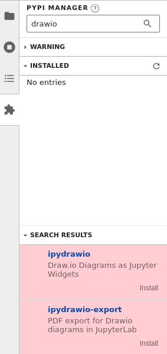
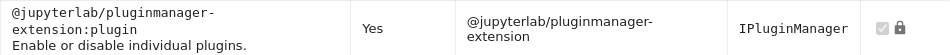

Extensions#
Fundamentally, JupyterLab is designed as an extensible environment. JupyterLab extensions can customize or enhance any part of JupyterLab. They can provide new themes, file viewers and editors, or renderers for rich outputs in notebooks. Extensions can add items to the menu or command palette, keyboard shortcuts, or settings in the settings system. Extensions can provide an API for other extensions to use and can depend on other extensions. In fact, the whole of JupyterLab itself is simply a collection of extensions that are no more powerful or privileged than any custom extension.
For information about developing extensions, see the developer documentation.
Installing Extensions#
A JupyterLab extension contains JavaScript that is installed into Jupyterlab and run in the browser. An extension contains one or more plugins that extend JupyterLab. The preferred JupyterLab extension type is a prebuilt extension because it does not require rebuilding JupyterLab JavaScript files.
Most JupyterLab extensions can be installed using Python pip
or conda packages. These packages may also include a server-side component
necessary for the extension to function.
Browsing Extensions on PyPI#
The Python Package Index (PyPI) is a repository of software for the Python
programming language, and the default source of packages for the pip package
manager. While a simple text search
will reveal hundreds of packages, a number of
trove classifiers are available for packages
to self-describe the features and compatibility provided:
Framework :: Jupyter :: JupyterLab :: Extensions :: Mime Renderers
Framework :: Jupyter :: JupyterLab :: Extensions :: Prebuilt
Note
These classifiers were accepted in early August 2021, and it will take some time for them to be broadly adopted.
You can help! The proposal of classifiers to a packages’s setup.py,
setup.cfg, or pyproject.toml can make a great first open source
contribution, as such contributions are:
easy for you, often possible directly through a project’s source code website, e.g. GitHub or GitLab,
easy for maintainers to review and merge, and
can have a positive impact on the discoverability of the package
Managing Extensions Using the Extension Manager#
You can use the Extension Manager in JupyterLab to manage extensions. That feature may have been disabled by your system administrator for security reasons.
Note
Since JupyterLab v4, the default manager uses PyPI.org as source for the available
extensions and pip to install them.
An extension will be listed if the Python package has the classifier:
Framework :: Jupyter :: JupyterLab :: Extensions :: Prebuilt
Moreover it is advised for extension author to provide the install.json file
to specify the exact Python package name.
Warning
There is no check to ensure the extension is compatible with the current JupyterLab version.
The Extension Manager is in the left sidebar.
Figure: The default view has three components: a search bar, an “Installed” section, and a “Discover” section.#
Disclaimer#
Danger
Installing an extension allows it to execute arbitrary code on the server, kernel, and the browser. Therefore, we ask you to explicitly acknowledge this.
By default, the disclaimer is not acknowledged.
Figure: User has not acknowledged the disclaimer#
As the disclaimer is not acknowledged, you can search for an extension, but can not install it (no install button is available).
To install an extension, you first have to explicitly acknowledge the disclaimer. Once done, this will remain across sessions and the user does not have to check it again.
Figure: Disclaimer checked#
For ease of use, you can collapse the disclaimer so it takes less space on your screen.
Finding Extensions#
You can use the extension manager to find extensions for JupyterLab. To discovery freely among the currently available extensions, expand the “Discovery” section. This triggers a search for all JupyterLab extensions on the PyPI.org registry, and the results are listed alphabetically.
Alternatively, you can limit your discovery by using the search bar. This performs a free-text search of JupyterLab extensions on the PyPI.org registry.
Installing an Extension#
Once you have found an extension that you think is interesting, install it by clicking the “Install” button of the extension list entry.
Danger
Installing an extension allows it to execute arbitrary code on the server, kernel, and in the client’s browser. You should therefore avoid installing extensions you do not trust, and watch out for any extensions trying to masquerade as a trusted extension.
The newly installed extension may require JupyterLab to be restarted.
Managing Installed Extensions#
When there are some installed extensions, they will be shown in the “Installed” section. These can then be uninstalled or disabled. Disabling an extension will prevent it from being activated, but without rebuilding the application.
Configuring the Extension Manager#
By default there are two extension managers provided by JupyterLab:
pypi: [default] Allow to un-/install extensions from PyPI.orgreadonly: Display installed extensions (with the ability to dis-/en-able them)
You can specify the manager with the command line option --LabApp.extension_manager;
e.g. to use the read-only manager:
jupyter lab --LabApp.extension_manager=readonly
PyPI Manager settings#
The pypi manager have specific options that can be set using command line options:
--PyPIExtensionManager.base_url: PyPI warehouse base URL - default to https://pypi.org/pypi.--PyPIExtensionManager.rpc_request_throttling: Throttling time between requests to the PyPI XML-RPC API in seconds - default 1.--PyPIExtensionManager.cache_timeout: PyPI extensions list cache timeout in seconds - default 300.--PyPIExtensionManager.package_metadata_cache_size: The cache size for package metadata - default 1500.
Listings#
When searching extensions in the Extension Manager, JupyterLab displays the complete search result and the user is free to install any source extension. This is the Default mode.
To bring more security, you or your administrator can enable blocklists or allowlists
mode. JupyterLab will check the extensions against the defined listings.
Warning
Only one mode at a time is allowed. If you or your server administrator configures both block and allow listings, the allow listing takes precedence.
The following details the behavior for the Blocklist mode and the Allowlist mode. The details to enable configure the listings can be read Listing Configuration.
Default mode#
In the default mode, no listing is enabled and the search behavior is unchanged and
is the one described previously.
Blocklist mode#
Extensions can be freely downloaded without going through a vetting process. However, users can add malicious extensions to a blocklist. The extension manager will show all extensions except for those that have been explicitly added to the blocklist. Therefore, the extension manager does not allow you to install blocklisted extensions.
If you, or your administrator, has enabled the blocklist mode, JupyterLab will use the blocklist and remove all blocklisted extensions from your search result.
If you have installed an extension before it has been blocklisted, the extension entry in the installed list will be highlighted in red. It is recommended that you uninstall it. You can move your mouse on the question mark icon to read the instructions.
Figure: Blocklisted installed extension which should be removed#
Allowlist mode#
An allowlist maintains a set of approved extensions that users can freely search and install. Extensions need to go through some sort of vetting process before they are added to the allowlist. When using an allowlist, the extension manager will only show extensions that have been explicitly added to the allowlist.
If you, or your administrator, has enabled the allowlist mode JupyterLab will use the allowlist and only show extensions present in the allowlist. The other extensions will not be show in the search result.
If you have installed an allowlisted extension and at some point in time that extension is removed from the allowlist, the extension entry in the installed list will be highlighted in red. It is recommended that you uninstall it. You can move your mouse on the question mark icon to read the instructions.
Figure: The second of the installed extensions was removed from the allowlist and should be removed#
Listing Configuration#
You or your administrator can use the following traits to define the listings loading.
blocked_extensions_uris: A list of comma-separated URIs to fetch a blocklist file fromallowed_extensions_uris: A list of comma-separated URIs to fetch an allowlist file fromlistings_refresh_seconds: The interval delay in seconds to refresh the listslistings_tornado_options: The optional kwargs to use for the listings HTTP requests
For example, to set blocked extensions, launch the server with
--LabServerApp.blocked_extensions_uris=http://example.com/blocklist.json where
http://example.com/blocklist.json is a JSON file as described below.
The details for the listings_tornado_options are listed
on this page
(for example, you could pass {'request_timeout': 10} to change the HTTP request timeout value).
The listings are json files hosted on the URIs you have given.
For each entry, you have to define the name of the extension as published in the NPM registry.
The name attribute supports regular expressions.
Optionally, you can also add some more fields for your records (type, reason, creation_date,
last_update_date). These optional fields are not used in the user interface.
This is an example of a blocklist file.
{
"blocked_extensions": [
{
"name": "@jupyterlab-examples/launcher",
"type": "jupyterlab",
"reason": "@jupyterlab-examples/launcher is blocklisted for test purpose - Do NOT take this for granted!!!",
"creation_date": "2020-03-11T03:28:56.782Z",
"last_update_date": "2020-03-11T03:28:56.782Z"
}
]
}
In the following allowed extensions @jupyterlab/* will allow
all jupyterlab organization extensions.
{
"allowed_extensions": [
{
"name": "@jupyterlab/*",
"type": "jupyterlab",
"reason": "All @jupyterlab org extensions are allowed, of course…",
"creation_date": "2020-03-11T03:28:56.782Z",
"last_update_date": "2020-03-11T03:28:56.782Z"
}
]
}
Managing Plugins with Plugin Manager#
Each JupyterLab extension is composed of one or more plugins. Plugins are also used by JupyterLab core itself.
The Advanced Plugin Manager enables listing and disabling individual plugins, but may have been disabled by your system administrator.
Functionally, toggling an extension from the plugin manager is equivalent to
running the jupyter labextension enable or jupyter labextension disable commands.

Plugins can be enabled/disabled on system, sys-prefix (default) or
user level, which influences where the page_config.json configuration
file is written to (see config section in results of jupyter --paths).
To change the level for the plugin manager and the default extension manager
use PluginManager.level trait (extension manager inherits from plugin manager).
Locking and Unlocking Plugins#
Administrators may lock specific plugins with:
jupyter labextension lock my-extension:plugin
To unlock a locked plugin:
jupyter labextension unlock my-extension:plugin
The locked plugins appear on the plugin list with a lock icon and cannot be enabled/disabled from the user interface:
Managing Extensions with jupyter labextension#
The jupyter labextension command enables you to list all installed extensions,
or disable any extension. It also brings helper commands for developers. See the
help with jupyter labextension --help.
Listing installed extensions#
List all installed extensions with:
jupyter labextension list
Note
jupyter labextension identifies an extension by its plugin namespace
(the part prior to :), which may be different from the name of the
pip or conda package used to distribute the extension.
Enabling and Disabling Extensions#
Disabling an extension prevents all plugins in that extension from running in JupyterLab (though the code is still loaded). You can disable specific JupyterLab extensions (including core extensions) too:
jupyter labextension disable my-extension
You can enable a disabled extension with:
jupyter labextension enable my-extension
Installed extensions are enabled by default unless there is configuration explicitly disabling them. Extensions can be disabled or enabled using the command line. Extensions or individual plugins within an extension can be disabled by another extension.
The priority order for determining whether an extension is enabled or disabled is as follows:
Presence of
<jupyter_config_path>/labconfig/page_config.jsonfile(s) with adisabledExtensionskey that is a object with package names as keys and boolean values.(deprecated) Presence of
disabledExtensionskey in<lab_app_dir>/settings/page_config.json. This value is a list of extensions to disable, but is deprecated in favor of the layered configuration approach in the labconfig location(s).Presence of
disabledExtensionskey in another JupyterLab extension’s metadata that disables a given extension. The key is ignored if that extension itself is disabled.
When using the command line, you can target the --level of the config:
user, system, or sys-prefix (default).
An example <jupyter_config_path>/labconfig/page_config.json could look as
follows:
{
"disabledExtensions": {
"@jupyterlab/notebook-extension": true
}
}
See documentation on LabConfig directories for more information.
Un-/Installing using jupyter labextension#
Note
This way of un-/installing JupyterLab extensions is highly discouraged.
The jupyter labextension command enables you to install or uninstall
source extensions from npm.
See the help with jupyter labextension --help. But to install those
source extensions, you first need to install Node.js.
Installing Node.js#
Source extensions require Node.js to rebuild
JupyterLab and activate the extension. If you use conda with
conda-forge packages, you can get Node.js with:
conda install -c conda-forge nodejs
If you use conda with default Anaconda packages (i.e., you don’t normally
use conda-forge), you should install Node.js from the Anaconda default
channel with conda install nodejs instead.
You may also be able to get Node.js from your system package manager, or you can download Node.js from the Node.js website and install it directly.
Installing and Uninstalling Source Extensions#
You can install source extensions from npm with:
jupyter labextension install my-extension my-other-extension
Use the my-extension@version syntax to install a specific version
of an extension, for example:
jupyter labextension install my-extension@1.2.3
You can also install a source extension that is not uploaded to npm, i.e.,
my-extension can be a local directory containing the extension, a
gzipped tarball, or a URL to a gzipped tarball.
Note
Installing a source extension will require installing Node.js and require a rebuild of JupyterLab.
Uninstall source extensions using the command:
jupyter labextension uninstall my-extension my-other-extension
If you are installing/uninstalling several extensions in several stages,
you may want to defer rebuilding JupyterLab by including the flag
--no-build in the install/uninstall step. Once you are ready to
rebuild, you can run the command:
jupyter lab build
Note
If you are rebuilding JupyterLab on Windows, you may encounter a
FileNotFoundError due to the default path length on Windows. Node
modules are stored in a deeply nested directory structure, so paths can get
quite long. If you have administrative access and are on Windows 10 or newer
you can enable long paths by adding a dedicated
registry key.